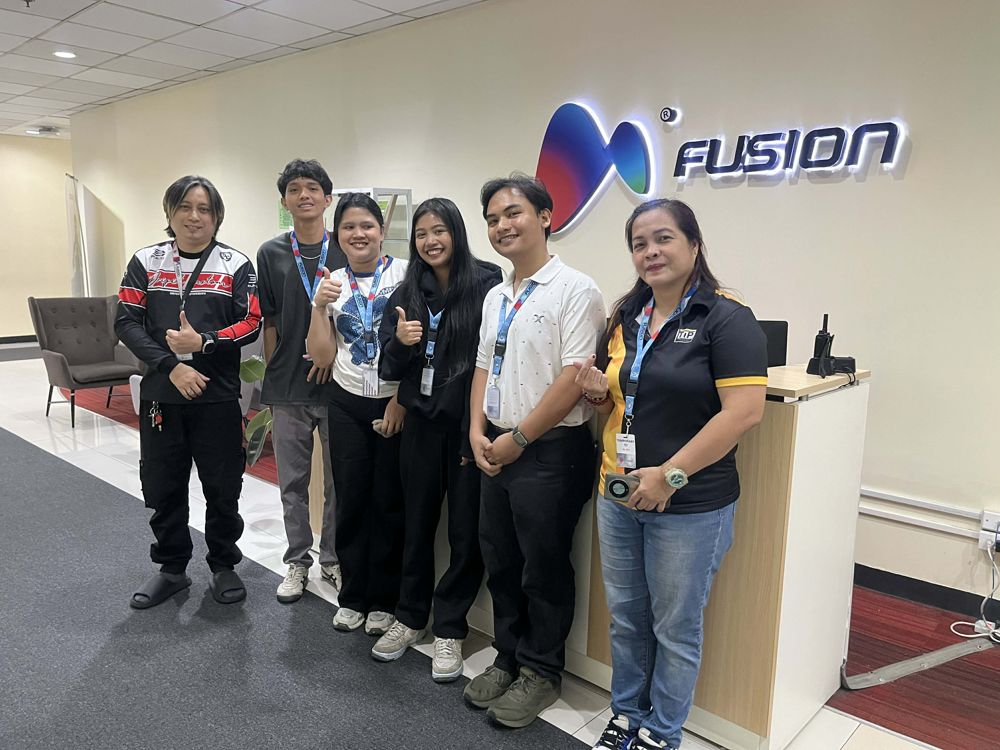

01
THE TEAM
Meet Our Interns


I am a graduating Information Technology student at the Technological Institute of the Philippines (T.I.P.), specializing in Cybersecurity. My academic focus has been on protecting digital assets and maintaining the integrity of enterprise-level network environments.
During my internship at Fusion CX, I served as a Desk-Site Engineer Trainee and Team Lead, bridging the gap between hardware infrastructure and technical compliance. I evolved from a trainee into a specialist capable of managing site-wide audits and large-scale software migrations.
My career aspirations involve becoming a Specialized System Engineer, focusing on enterprise-level hardware deployment and security compliance. I possess a unique professional niche in Software QA and Project Management, allowing me to ensure every deployment is not only functional but also secure and process-efficient.
A dedicated Information Technology student at T.I.P. Manila with a passion for system administration and technical documentation. Contributed significantly to the Enterprise Asset Inventory project.
During the OJT at Fusion CX, developed hands-on expertise in hardware auditing, asset lifecycle management, and compliance documentation for the AT&T account requirements.
Aims to pursue a career in IT Audit and Compliance, leveraging technical skills in cybersecurity and system administration to ensure enterprise-level security standards.
A motivated IT student from T.I.P. Manila specializing in system migration and software deployment. Played a key role in the Avaya-to-Genesys Softphone transition project.
At Fusion CX, gained valuable experience in enterprise software deployment, troubleshooting telephony systems, and providing real-time technical support to production agents during critical migration phases.
Aspires to become a Cybersecurity Analyst or Compliance Officer, ensuring enterprise security standards are met across diverse IT environments.
A competent IT student from T.I.P. Manila with a strong interest in cybersecurity and compliance management. Contributed to the AT&T Infrastructure Compliance Audit.
During OJT at Fusion CX, developed proficiency in security script execution, endpoint management through CrowdStrike Falcon, and regulatory compliance procedures for international accounts.
Aspires to become a Systems Administrator or Network Engineer, focusing on modern cloud communications and enterprise infrastructure management.

Fusion CX is a global BPO and customer experience leader that manages high-security accounts for international brands. They utilize advanced AI-driven tools and human-led support to deliver seamless customer service across multiple production floors.
Our team of 4 interns was a key contributor to three critical initiatives: the Enterprise Asset Inventory, the Avaya-to-Genesys Softphone Software Transition, and the AT&T Compliance Audit.
Our tasks included performing deep-level system audits, re-imaging units for security compliance, leading intern teams during floor-wide audits, and providing real-time technical support to production agents.
A comprehensive audit initiative to map all physical and digital assets across the 5th, 6th, and 7th production floors.
A large-scale migration of agents from the legacy Avaya telephony system to the modern Genesys Cloud CX Softphone platform, executed with zero downtime to maintain continuous production operations.
A critical security compliance initiative to align site infrastructure with AT&T's rigorous global security standards. Required precision-level execution of scripts, re-imaging, and vulnerability remediation under strict audit conditions.
Produced a comprehensive inventory of PCs, monitors, and headsets across the 5th, 6th, and 7th floors of the site.
Successfully deployed Genesys Softphone across workstations in a single shift. All agents were fully operational on the new platform with zero production downtime recorded.
Executed custom .bat files and GPUpdate scripts to block unauthorized tools and enforce security policy. Results directly produced a "Passed" status on the AT&T Compliance Audit — a critical milestone for the site's account retention.
Reimaged and tested standardized OS/software images for Lines of Business in various lines of business. Each image was QA-verified — confirming digital licenses, BIOS settings, and tool accessibility — before mass deployment.
Gained hands-on experience in asset lifecycle management and hardware-to-user accountability in a high-security BPO environment. Learned to conduct structured audits under enterprise compliance conditions.
Progressed from trainee to Team Lead, managing task delegation and mentoring new intern cohorts in technical compliance procedures and company security policies.
Mastered a "test-before-deploy" discipline — verifying digital licenses, BIOS configurations, and tool accessibility (Sanas, Genesys) before any production deployment to minimize errors.
Learned to manage Endpoint Detection and Response (EDR) through CrowdStrike Falcon. Resolved real-world software vulnerabilities via manual Registry Hive imports in a live enterprise environment.
Identified "Malicious" warnings triggered by Infraon appearing in the CrowdStrike Falcon dashboard. Applied cybersecurity coursework on endpoint management to perform surgical uninstalls directly through the Windows Registry Editor (Hive manipulation), resolving the flags without disrupting production environments.
Applied project management principles from academic training to systematize the intern onboarding workflow. Created a comprehensive checklist covering all company security policies, which was adopted as the standard onboarding reference for subsequent intern cohorts — directly improving training efficiency and compliance awareness.
Diagnosed persistent APIPA (169.254.x.x) IP address assignment failures affecting agent workstations. Implemented a systematic port-sweep protocol using NetAlly Network Sweepers to identify faulty LAN connections at Layer 1/2, proactively resolving connectivity issues before they could impact agent production performance.
Managing the technical precision demanded by the AT&T Audit Day — where a single misconfiguration could jeopardize the entire account. Every action required documentation, verification, and escalation discipline simultaneously.
Bridging the gap between physical hardware inventory and digital security compliance as Desk-Site Engineer Trainees — evolving into a cohesive team that successfully completed all three major projects with the AT&T Audit resulting in PASSED status.
We discovered that our Cybersecurity background allows us to see "risks" where others see only "tasks." Combined with a Project Management mindset, we learned that a great IT department relies equally on speed and rigorous documentation.
This OJT cemented our career paths as Systems Engineers specializing in large-scale infrastructure and compliance-heavy environments. Systems Engineering is not just hardware — it is the art of maintaining a secure, audited, and highly efficient ecosystem.

We were honored to have our OJT Coordinator visit us at Fusion CX. This visit allowed our school representative to observe our work environment, assess our progress, and provide guidance on our internship journey.
This visit was a meaningful milestone in our OJT journey. It reinforced our commitment to excellence and gave us an opportunity to showcase the skills we have developed at Fusion CX. We are grateful for the continued support from our school and our host company.